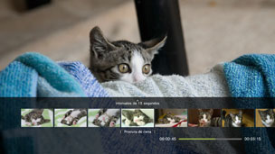
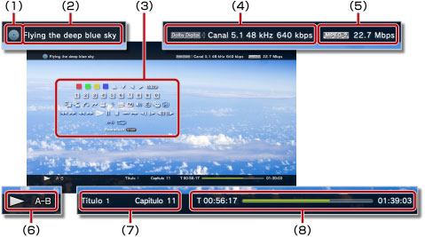

Vídeo > Utilizar o painel de controlo das opções
Utilizar o painel de controlo das opções
Realize várias operações utilizando o painel de controlo no ecrã. É possível visualizar ou ocultar o painel de controlo das opções, premindo o botão  .
.
Os ícones apresentados nesta página são definidos da seguinte forma:
 |
Vídeo gravado num disco Blu-ray (BD) apenas de leitura |
|---|---|
 |
Vídeo gravado num BD regravável |
 |
Vídeo gravado em formato AVCHD |
 |
|
 |
Vídeo gravado no modo VR em DVD-R / DVD-RW |
 |
Ficheiros de vídeo guardados no disco rígido |
 |
Ficheiros de vídeo guardados em suportes de armazenamento* |
| * |
Em alguns modelos é necessário um adaptador USB apropriado (não incluído) para usar suportes de armazenamento. |
|---|
Atenção
Alguns conteúdos podem ter condições de reprodução predefinidas pelo criador do conteúdo. Nesses casos, alguns itens do painel de controlo podem não estar disponíveis.
Ícones Vermelho / Verde / Amarelo / Azul


Realiza as operações correspondentes ao ícone. As funções atribuídas ao ícone variam consoante o conteúdo.
Para Cima / Para Baixo / Esquerda / Direita

Selecciona um item.
Confirmar
Confirma o item seleccionado.
Teclado Numérico

Introduz números.
Menu de Contexto
Apresenta o menu de contexto.
Menu
Apresenta o menu.
Menu Superior
Apresenta o menu superior.
Voltar
Volta para um ponto específico no vídeo.
Pesquisa de cena

Utilize esta função para visualizar miniaturas criadas em determinados intervalos de tempo. Seleccione uma miniatura para começar a reproduzir o vídeo a partir dessa cena específica.

1. |
Utilize o botão |
|---|
 ou
ou  para seleccionar o intervalo de tempo a utilizar durante a criação de miniaturas. Pode seleccionar [Capítulo] ou um dos diversos intervalos de tempo.
para seleccionar o intervalo de tempo a utilizar durante a criação de miniaturas. Pode seleccionar [Capítulo] ou um dos diversos intervalos de tempo.2. |
Utilize o botão |
|---|
 ou
ou  para seleccionar a miniatura para a cena que pretende ver. A reprodução começa a partir da cena que seleccionar.
para seleccionar a miniatura para a cena que pretende ver. A reprodução começa a partir da cena que seleccionar.Notas
- Só pode seleccionar a opção [Capítulo] para conteúdo de vídeo que inclua informações de capítulo.
- A função de procura de cena não pode ser utilizada para conteúdo de vídeo com duração inferior a um minuto.
- A função de procura de cena não pode ser utilizada para alguns tipos de conteúdo de vídeo.
- Quando selecciona uma miniatura, é reproduzida uma amostra de 15 segundos da cena.
Ir para

Reproduz a partir de um capítulo ou tempo específico.
| Título X | Especifica o número do título. |
|---|---|
| Capítulo X | Especifica o número do capítulo. |
| XX:XX / XX:XX:XX | Especifica o tempo. |
Nota
Consoante o ficheiro de vídeo, poderá não conseguir utilizar a função (Ir para).
Opções de Ângulo
Seleccione um dos ângulos de visualização disponíveis para conteúdo gravado com vários ângulos.
Opções de Áudio
Seleccione uma das opções de áudio disponíveis para conteúdo gravado com várias faixas de áudio.
Opções de Legendas
Seleccione uma das opções de legendas disponíveis para conteúdo gravado com vários idiomas de legendas.
Opções de Estilo de Legendas
Selecciona uma das opções de visualização disponíveis para conteúdo gravado com vários estilos de legendas.
Controlo de Volume
Ajusta o nível de saída do volume de conteúdo reproduzido em  (Vídeo). Seleccione um de nove níveis.
(Vídeo). Seleccione um de nove níveis.
Notas
- O som pode ficar destorcido se o nível de volume de saída for definido muito alto. Caso isto aconteça, baixe o nível do volume de saída.
- Esta definição pode ser desactivada quando utilizar determinados dispositivos de áudio ou quando emitir determinados tipos de áudio.
Definições AV
Ajuste as definições relacionadas com a saída de conteúdos reproduzidos em (Vídeo). Os itens visualizados variam consoante os conteúdos.
| Redução de Ruído de Imagens | Para reduzir o ruído fino. |
|---|---|
| Redução de Ruído de Bloco | Para reduzir ruído de bloco tipo mosaico apresentado no ecrã. |
| Redução do Ruído de Mosquito | Defina para reduzir o ruído de mosquito que aparece nas extremidades das imagens. |
| Melhorar a resolução | Definir saída melhorada. O valor que definir é reflectido em [Melhorar resolução] em  (Definições) > (Definições) >  (Definições de Vídeo). (Definições de Vídeo). |
| Formato de Saída de Vídeo | Defina o formato de saída de vídeo. Seleccione o formato de saída de vídeo para reprodução de DVD ou BD. O valor que definir reflecte-se em [Formato de Saída de Vídeo BD / DVD (HDMI)] em (Definições) > (Definições de Vídeo). |
| Y Pb / Cb Pr / Cr Super-Branco | Definir apresentação super-branco. O sinal de super-branco pode agora ser reproduzido com um DVD, Blu-ray Disc (BD) ou AVCHD. O valor que seleccionar reflecte-se em [Y Pb / Cb Pr / Cr Super-Branco (HDMI)] em (Definições) >  (Definições de Apresentação). (Definições de Apresentação). |
| RGB Gama completa | Defina para apresentação RGB gama completa. O valor que definir reflecte-se em [RGB Gama completa] em (Definições) > (Definições de Apresentação). |
| Controlo de Gama Dinâmica | Define o controlo de gama dinâmica. Active ou desactive a função de controlo de gama dinâmica do seu sistema PS3™ durante a reprodução de BD e DVD com som Dolby Digital. O valor que definir reflecte-se em [Controlo de Gama Dinâmica BD/DVD] em (Definições) > (Definições de Vídeo). |
| Formato de Saída de Áudio | Defina o formato de saída de áudio. Seleccione o formato de saída de áudio para reprodução de DVD ou BD. O valor que definir reflecte-se no [Formato de Saída de Áudio BD/DVD (HDMI)] ou [Formato de Saída de Áudio BD (Digital Óptico)] em (Definições) > (Definições de Vídeo). |
Opções de Tempo
Seleccione para apresentar o tempo decorrido ou o tempo restante de um título ou de um capítulo. Os itens apresentados variam consoante o conteúdo que estiver a ser reproduzido.
Modo de Ecrã
| Normal | Mostra o vídeo de forma ajustada ao tamanho do ecrã sem alterar as proporções. |
|---|---|
| Zoom | Mostra o vídeo em formato de ecrã total sem alterar as proporções. As partes do vídeo nos cantos superior e inferior ou direito e esquerdo são cortadas. |
| Ecrã Total | Definido para apresentar o conteúdo em ecrã total, alterando as proporções e esticando a imagem superior para inferior e esquerda para direita. |
| Original | Apresenta o vídeo no seu tamanho original. |
Nota
Dependendo do ficheiro de vídeo, pode não ser possível alterar o modo de ecrã.
Alterar Ícone
Altere o ícone (imagem miniatura) associada a um ficheiro de vídeo. Durante a reprodução do ficheiro de vídeo, seleccione (Alterar ícone) no momento em que é apresentada a imagem que pretende seleccionar como ícone.
Notas
- Dependendo do ficheiro de vídeo, pode não ser possível alterar o ícone.
- Um ficheiro de vídeo com menos de dois segundos pode ser utilizado como ícone.
Eliminar
Elimine um ficheiro de vídeo em reprodução.
Apresentar
Apresenta o estado da reprodução e outras informações relacionadas. As informações apresentadas variam consoante o conteúdo que estiver a ser reproduzido.

(1) |
Suporte |
|---|---|
(2) |
Título |
(3) |
Painel de Controlo |
(4) |
Codec do som / número do canal / taxa de amostragem / taxa de bits |
(5) |
Codec do vídeo / taxa de bits |
(6) |
Ícone do estado |
(7) |
Título / capítulo |
(8) |
Tempo decorrido / tempo total |
Anterior (Voltar ao Início) / Seguinte
Vai para o capítulo anterior ou seguinte.
Nota
Quando reproduz ficheiros de vídeo guardados em suportes de armazenamento ou no disco rígido, a opção  (Seguinte) não estará disponível. E se seleccionar
(Seguinte) não estará disponível. E se seleccionar  (Anterior) fará com que a reprodução comece a partir do início do ficheiro de vídeo.
(Anterior) fará com que a reprodução comece a partir do início do ficheiro de vídeo.
Retrocesso Rápido / Avanço Rápido
Reproduz o conteúdo em retrocesso rápido ou avanço rápido. Sempre que premir o botão  , a taxa de reprodução é alterada.
, a taxa de reprodução é alterada.
Reproduzir
Inicia a reprodução de conteúdo.
Nota
Na maioria das vezes, na próxima vez que reproduzir conteúdo de vídeo que tenha sido parado durante a reprodução, a reprodução será retomada a partir do ponto de paragem anterior.
Para reproduzir desde o início, prima o botão PS para parar a reprodução e apresentar o menu XMB™. Seleccione o ícone, prima o botão e seleccione [Reproduzir desde o Início] no menu de opções.
Pausa
Interrompe a reprodução temporariamente.
Parar
Replay instantâneo / Avanço instantâneo
Move para um ponto no vídeo 15 segundos antes ou 15 segundos depois.
Lento (Retroceder) / Lento (Avanço)
Retrocesso das Imagens / Avanço das Imagens
Reproduz uma imagem de cada vez.
Repetição A-B
Reproduz repetidamente uma secção especificada do conteúdo.
1. |
No início da secção a ser repetida, seleccione |
|---|---|
2. |
No fim da secção a ser repetida, prima o botão |
Nota
Para cancelar a função de Repetição A-B, seleccione (Repetição A-B).
Repetir
Reproduz o conteúdo repetidamente.
Nota
Para cancelar a função de repetição, seleccione (Repetir) até que seja apresentada a informação [Repetição Desligada].